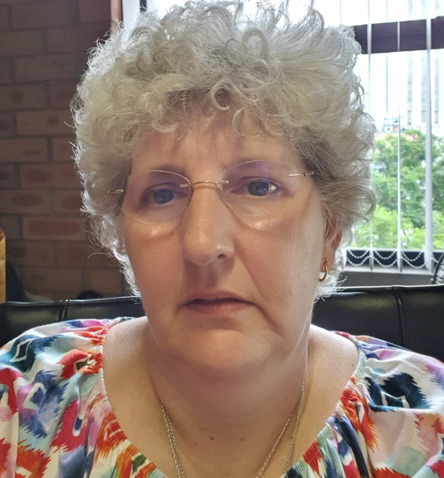
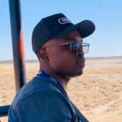
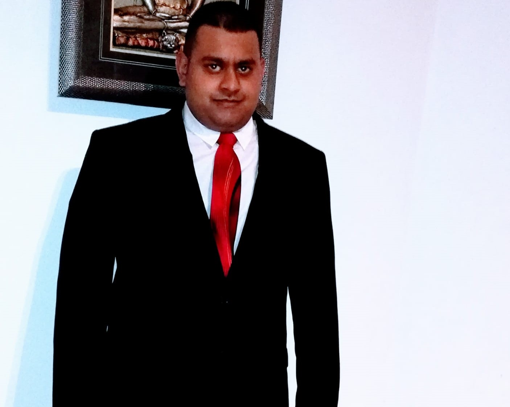
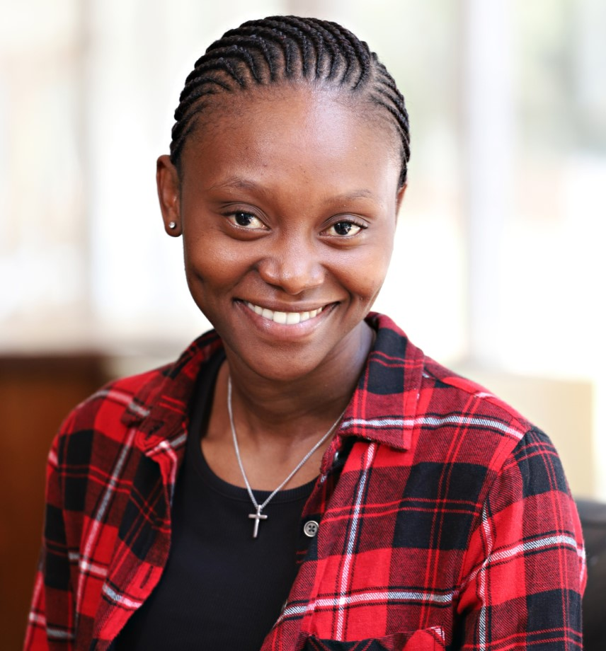

Staff
Post-docs
PhD students
MSc students
Hons students
-
Prof James Chibueze

I completed my BSc Hons (First Class) in Physics and MSc in Astrophysics at the University of Nigeria and PhD at Kagoshima University, Kagoshima, Japan. My science interests include, but not limited to, masers in Galactic star-forming region, astrometry, radio galaxies, Galaxy Clusters, FRBs, and high fidelity imaging with sensitive radio interferometers (ALMA, VLA, MeerKAT) and VLBI. I currently chair the Science Committee of the African Astronomical Society (AfAS), and I am a member of the Users Committee of South African Radio Astronomy Observatory (SARAO) and enhanced Multi Element Remotely Linked Interferometer Network (e-MERLIN)steering committee member. I supervise and co-supervise dozens of MSc and PhD students in South Africa, Botswana, Kenya, Taiwan, Japan, Ethiopia and Nigeria. Besides astronomy, I love to play soccer and play with my wife and kids.
Publications
Email: james.chibueze@gmail.com
Phone: +27 18 299 2426Dr Zolile Mguda

I am involved in a project to use Gaia data to measure the masses of Milky Way globular clusters and extend that to dwarf spheroidal MW satellite galaxies. I am also interested in reverberation mapping studies of quasars. I am involved in a study to improve the teaching of astronomy to the public and potentially extend that to teachers. This will hopefully improve the appreciation that the general public has of the investment the government has made into astronomy.
Publications
Email: mgudazm@unisa.ac.za
Prof Derck Smits

I got my PhD in Astronomy from UCT in 1990 on the topic of "Atomic Processes in Nova Shells". From 1990 - 1998 I worked at the Hartebeesthoek Radio Astronomy Observatory (HartRAO) where I was part of the spectroscopy group doing observations mainly on excited OH masers. In Feb 1998 I moved to Unisa where I was head of the astronomy section of the Dept of Mathematics until I retired at the end of 2019. I am still involved with colleagues doing research on modelling of nebular gases, masers in star-forming regions and W UMa contact binary stars. In my spare time, I spend time in game reserves photographing animals and birds, and then a lot more time editing the digital photos.
Publications
Email: derck.smits@gmail.com
Phone: +27 82 388 2705 -
Dr Tiaan Bezuidenhout

I completed my MSc in astronomy at North-West University, South Africa, and my PhD at the University of Manchester, UK. I'm a member of the MeerTRAP real-time survey for fast transients with MeerKAT. My research interests include fast radio transients—particularly pulsars and fast radio bursts—as well as multi-wavelength follow-up campaigns and software development for astronomy. When not doing astronomy I am probably watching the rugby or spending time with my dog (Doughnut the pug).
Publications
Email: bezmc93@gmail.com
Phone: +27 64 897 2524Dr Mohamed Darwish

I completed my MSc in Astrophysics at Al-Azhar University, Egypt, and pursued my PhD, a collaborative effort between Al-Azhar University, Egypt, and the University of Manchester, UK. As a member of the IAU, URSI, and AfAS, my research focuses on star formation, with a particular emphasis on massive stars using Maser emission. I also investigate stellar variability, particularly in eclipsing binaries. Beyond academia, I am passionate about science communication and engaging the public with scientific discoveries. In my free time, I enjoy playing soccer, ping pong, and traveling.
Publications
Email: darwish.msk@gmail.com
Phone: 0020 1009 169305Dr Willice Obonyo

I hold a Ph.D. degree in Astrophysics from the University of Leeds in the UK, a masters degree in astrophysics and space sciences from the University of Cape Town, and a B.Ed (science) degree from Moi University, Kenya. My primary research interest involves the use of jets from massive young stellar objects to study massive star formation. In addition to science work, I am also a trained teacher with over ten years of teaching experience, five as a high school teacher, teaching both physics and mathematics in a Kenyan public school, and the rest as a physics tutor at the University of Cape Town and the University of Leeds, and lately as a lecturer at the Technical University of Kenya.
Email: obonyow@gmail.com
Dr Jude Chukwuebuka Ugwu

I have B.Sc, M.Sc and Ph.D degree from the Department of Physics and Astronomy, University of Nigeria Nsukka and specialize in Radio Astronomy. My major research interest is star formation, especially massive star formation. The main aim of my research is to better understand the earliest evolutionary phase of high-mass star formation, using multiwavelength data, such as VLA, MeerKAT, ALMA, IRAC and Spitzer data, with primary objective of characterizing the chemical, physical and kinematic conditions of ongoing massive star formation. My other science interests include, but not limited to, masers, astrometry and cosmic rays. Presently, I am a Lecturer in the Department of Science Laboratory Technology, University of Nigeria, Nsukka and a Postdoctoral Researcher in the Department of Mathematical Sciences, College of Science, Engineering and Technology, University of South Africa. I am working on some of the ALMA cores in other to pin down the initial conditions of ongoing massive star formation and assist in supervising students. I love listening to music, watching movies and catching funs with my family and friends.
Publications
Email: jude.ugwu@unn.edu.ng,
Phone: +2348039555697 -
Annarien Headley

I completed my MSc at the University of KwaZulu-Natal, South Africa and am currently completing my PhD at the University of South Africa under the guidance of Prof. J. Chibueze. My scientific research interests amongst others include star formation in dense molecular clouds, galactic star forming regions, and multi-wavelength astronomy, although I do enjoy the intrigue of all aspects of astronomy. When I am not studying, I am working part-time and spending time with my husband.
Email: annarien.bester@gmail.com
Analize Jooste
My passion for Astronomy started while viewing Halley’s Comet one evening in Van Stadensrus, Free State, with my grandfather. This whitish speck with its short tail etched on a dusk sky, sparked a love and awe for the heaven’s indescribable beauty and magnificence of Creation. To understand a tiny bit about these wonderful objects, I thus completed BSc (Mathematics and Theoretical Physics), BSc (Hons) (Astronomy) and MSc (Astronomy) (all 3 cum laude) via Unisa. For the more earthly matters, I acquired a BBA (Unisa). I am also a member of SAIP. My interests are in the analysis of light curves of variable stars, evolution and modeling of contact binary stars (WUMa), stellar evolution, space and terrestrial weather. In my spare time, I enjoy the company of my 4-legged friends and classic music.
Email: ajooste.24@gmail.com
Moses Langa

I hold a Bachelor of Science degree in Astronomy and Astrophysics as well as a Master of Science degree in Physics (specializing in Astronomy and Astrophysics), both earned at the University of Nairobi in Kenya. I am a DARA (Development in Africa with Radio Astronomy) cohort 2 student and a Tutorial Fellow at the Technical University of Kenya. Currently, I am immersed in my doctoral research at the Technical University of Kenya, focusing on the captivating topic of Large Scale Triggered Star Formation in the Milky Way. My academic journey has been fueled by a passion for unraveling the mysteries of the cosmos, and I am dedicated to contributing valuable insights to the field of radio astronomy through my ongoing PhD work. I enjoy football/soccer and value social and spiritual life as well.
Email: langamoses1@gmail.com
Phone: +25 47 186 61340Francisco Macucule
Originally from Mozambique, I am a scientist with a growing interest in the universe. My journey began with a degree in Medical Physics at Eduardo Mondlane University. While there, a program called DARA ignited my passion for astronomy. This newfound fascination led me to pursue a Master's degree in Physics and Astrophysics at the University of Namibia. There, I played a crucial role in testing the location for a powerful new telescope called the Africa Millimetre Telescope. This telescope will help us learn more about black holes! Now, I am a PhD student at the University of South Africa (UNISA) where I'm diving deeper into the intriguing process of how stars are born.
Email: franciscofeniasmacucule@gmail.com
Phone: +258857970641Jifar Raya

I completed my BSc (First Class) in Physics from Bahirdar University and MSc in Astrophysics Jimma University, Ethiopia. My science interests include, but are not limited to, radio galaxies, galaxy clusters, star forming galaxies, galaxy formation and morphology, cosmology, fast radio transients including pulsars, techno-signatures, and other radio astronomy areas. Currently, I’m an academic lecturer and PhD student in radio astronomy at Jimma University, Ethiopia, under the supervision of Professor James Chibueze from University of South Africa and Dr Tolu Biressa from Jimma University. Also, I am currently chairman the Ethiopian Space science Society Jimma Branch (ESSSJB), a member of Ethiopian Space Science Society at national level and a full member of African Astronomical Society (AfAS). Besides astronomy, I love watching soccer and play around with my friends.
Publications
Email: jifarraya3@gmail.com
Phone: +251 913275571Mavis Seidu

I am a PhD student at the North-West University, pursuing studies in radio astronomy. My research interests include massive star formation, triggered star formation, HII regions, young stellar objects (YSOs) and masers. Within my academic journey, I am actively involved in research, outreach and volunteer work in astronomy. I am an advance DARA student and a member of the African Astronomical Society (AfAS) as well as the South African Institute of Physics (SAIP). Beyond academia, I find joy in travelling, listening to music and immersing myself in diverse cultures.
Email: mavisseidu2014@gmail.com
Yuri Uno

I earned my Bachelor of Science in Advanced Science from Hosei University and my Master of Science in Astrophysics from Kagoshima University, both located in Japan. Currently, I am pursuing my PhD at National Chung Hsing University in Taichung, Taiwan. My research interests lie at the intersection of astrobiology and the quest to understand the origins of life. Specifically, I am fascinated by the potential for intelligent life beyond Earth, a field of study encompassed by the Search for Extra-Terrestrial Intelligence (SETI). Through my work, I aim to contribute meaningful insights into this captivating area of scientific inquiry.
Publications
Email: yuri.uno@smail.nchu.edu.tw
Phone: +886903873071 -
Popnwin Barivure Love

I earned my Bachelor of Science degree from Rivers State University, Nigeria. As a recipient of the 2024 International Astronomical Union Scholarship, I am currently pursuing my master's degree at North-West University in Potchefstroom, South Africa. My academic focus lies in star formation, and my research project centers on observing star-planet interactions utilizing the MeerKAT telescope. Beyond academia, I have a passion for playing volleyball and watching soccer.
Email: lpopnwin@gmail.com
Phone: +27653650720Rabyatalhabesha Bilal

My research interest is in massive young stellar objects (YSOs) and radio astronomy. Studying massive YSOs can provide valuable insights into the early stages of star formation and the evolution of stellar systems. Radio astronomy helps to observe the cold, dense regions where these objects form, as well as the energetic processes associated with their birth and early development. Exploring the radio emission from massive YSOs can help unravel the complex physical processes involved in their formation, accretion, and interaction with their surroundings. It's an exciting area of research with potential implications for our understanding of star formation, the evolution of galaxies, and the formation of planetary systems.
Email: rabyatalhabesha@gmail.com
Phone: +251920730540Nicholas Chidi Joseph
I completed my Bachelors in Science (Physics and Astronomy) from the University Of Nigeria, Nsukka. I was awarded the Pan African and Planetary Science Mobility Scholarship in 2023 to pursue a MastersDegree in Astronomy at the Copperbelt University in Zambia. My current work basically focuses on Regions of high-mass star formation within the milky way galaxy using the ALMA /MEERKAT data. I am also interested in Masers being a tool for observation. I hope to pursue a career in academia which will involve active research. I am a strong believer of the African dream. In the near future, I shall delve deeper into the world of radio astronomy. I play and watch soccer during my spare time.
Email: chidinicholasj@gmail.com
Phone: +2348038815341, +260762550990Rahul Jaichund Maharaj
I completed a BSc(Hons) in Physics degree at UKZN in 2022. I was awarded the 2024 UNISA MSc Postgraduate Award which enables me to pursue a masters degree in astronomy. My project is on the spectral evolution of galaxies. My research interests are on radio/multiwavelength astronomy and star formation at the moment. My hobbies are listening to music and watching movies.
Email: rahulmaharaj523@gmail.com
Phone: +27734835887Elisep Mogapi
I completed my Bachelor of Science Honours degree in Physics at the North-West University (Mahikeng campus). Presently, I am pursuing a Master's degree in Astronomy, with a research focus on star formation. My research entails investigating the periodic variability of masers associated with massive protostars. Apart from my academic pursuits, I play netball, and I find pleasure in listening to music and watching movies.
Email: elisepmogapi@gmail.com
Mpho Mokanyane
I have attained both a Bachelor of Science degree in Mathematics and Applied Mathematics, as well as a Bachelor of Science with Honours in Astronomy from the University of South Africa (UNISA). My scholarly pursuits revolve around the intricate realms of Active Galactic Nuclei and the catalyzing agents of stellar genesis, notably MASERS. Firmly convinced of astronomy's capacity to emancipate the intellectual faculties of young minds in Africa, I am deeply committed to its role in fostering a mindset unrestrained by conventional boundaries, thereby nurturing innovative thinking and expansive perspectives. In alignment with this sentiment, my enthusiasm extends to engaging with Astronomy outreach programs.
Email: 35550996@mylife.unisa.ac.za
Patrick Mwaniki

I have a BEd Science Hons (First Class) in Mathematics and Physics, and I'm currently in my second year of MSc Physics at Meru University of Science & Technology (MUST), Meru, Kenya. Supernova remnants are my area of research interest. Apart from astronomy, I also enjoy watching movies and soccer.
Email: patonjo522@gmail.com
Phone: +254 723 219419Ashley Nyamandi

I completed my Bachelor of Science Honours Degree in Applied Physics at the National University of Science and Technology (Zimbabwe) in 2022. In 2023 I was awarded the Pan African Planetary and Science Network (PAPSSN) scholarship to pursue a master’s degree in Astrophysics at The Copperbelt University in Zambia, which I will hopefully complete in 2025. My science interest is mainly the applications of machine learning solving astrophysics problems. During My spare time I like playing chess and going out with my friends.
Email: nyamandiashley@gmail.com
Phone: +260 761 774 541Francia Razafimanjato

I obtained a Master's degree in Physics specializing in astrophysics and astronomy at the university of Antananarivo, Madagascar. My scientific research interests include Active Galactic Nuclei (AGN), radio galaxies, star clusters, star formation and multi wavelength astronomy. I'm a member of the African Astronomical Society (AfAS) and was a DARA student in the past. I enjoy singing, swimming, and reading novels in my free time.
Email: franciarazafimanjato@gmail.com
Phone: +261 34 79 285 39Emmanuel Uzowuru

I have a Bachelor of Technology in Physics from the Federal University of Technology, Owerri, Nigeria. As an undergraduate, I worked on renewable energy, however, my love for the electromagnetic spectrum drew my attention to Astronomy/Astrophysics. Currently, I am working on "High Resolution Radio Continuum and Spectral line study of Massive Proto-Stellar Objects" with emphasis on masers as an important observational tool. I love masers and star formation a lot, and would love to delve more into knowing them better. I am also interested in Machine Learning as it concerns astrophysics.
Publications
Email: emmanueluzowuru373@gmail.com
Phone: +2348144473444